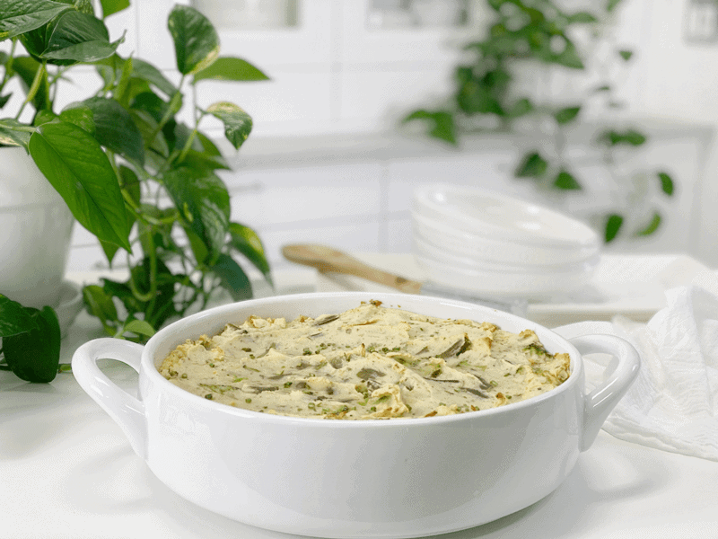
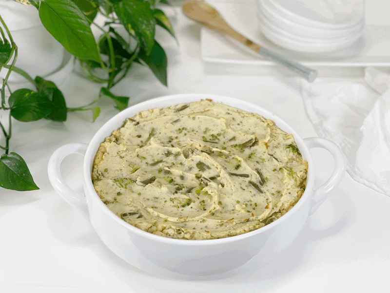

Twice-Baked Mashed Potato Casserole | Oil-Free

Memory is a funny thing. I always find it interesting what sticks in our memory banks and what slips away. The first time I ever witnessed twice-baked potatoes, I thought it was pure wizardry. I was seventeen years old, had moved to a state where I didn’t know a single soul, and didn’t have one lick of culinary understanding.

Not too long after settling into my new life, I met a married couple who took me under their wing. They had a busy lifestyle that was almost overwhelming, even for a young whippersnapper like me. Every Sunday after church, they would invite me to their home for brunch. Kids would be running in circles, the dogs barking at their heels, the sound of the screen door opening and closing (usually left open, which led to their mom yelling; then it slammed shut). The kitchen was a flurry with dishes clanking, water boiling, mixers beating…you get the picture. To many, this may seem like an everyday life experience, but I grew up with a tranquil childhood, so visiting them always seemed like a holiday celebration.
It was at one of these “events” that I got to witness the making of twice-baked potatoes (mashed, then baked) as well as enjoying them spoonful after spoonful (before the dish even hit the table). The creamy, fluffy, hearty texture about did me in. I guess I have to keep in perspective that I was living on boxed foods at the time, so everything seemed like a real treat when it was cooked from scratch. All these fun memories flooded me while creating this dish.

I intentionally set out to make this recipe fat-free, so if that’s not your jam, by all means, fatten this dish up by using nut milk or coconut milk to thin out the potatoes. But in my opinion, it just doesn’t need it. Bob and I had this for dinner–and only this! It wasn’t our intent to just eat two bowls each of Mashed Potato Casserole, but we were enjoying it too much to be bothered by some other food.
However, we drizzled my Creamy Dijon Dressing over the top of each bowl we served ourselves. The creaminess of that dressing, coupled with all the fantastic flavors, made us giddy. We both enjoyed the tender bites of broccoli and green beans that were mixed in, and during baking, a crust developed on top, which quickly became my favorite part. I can’t wait for tomorrow’s leftovers!
Make Every Bite Count
Start with organic potatoes.
- According to the USDA’s Pesticide Data Program, 35 different pesticides have been found on conventional potatoes. 6 are known or probable carcinogens, 12 are suspected hormone disruptors, 7 are neurotoxins, and 6 are developmental or reproductive toxins.
- Root vegetables absorb all of the pesticides, herbicides, and insecticides that are sprayed above the ground and then eventually make their way into the soil. With potatoes, however, the chemical treatment is quite extensive. During the growing season, they get treated with fungicides. Before harvesting, they get sprayed with herbicides to kill off the fibrous vines. After being dug up, they get resprayed to prevent them from sprouting.
Steam, rather than boil.
- Since the potatoes’ nutrients are water-soluble, they will leach out of the boiled potato and into the cooking water, which is usually discarded. Steaming them removes far fewer nutrients, which will leave the potato more vitamin-filled.
Always give thanks.
- It’s important to always say “grace” with any meal or snack. Grace is the pause that nourishes us the best. Blessing the food is a way of being thankful for the food set before us. The practice of saying grace connects us to the food we eat, the people we share it with, and the world that has supported and nurtured us with nourishment.
- 3 pounds (9 cups) peeled, diced white potatoes
- 2+ cups vegetable broth or water
- 3 Tbsp nutritional yeast
- 2 tsp Italian Seasoning
- 1 tsp granulated garlic
- 1/2 tsp sea salt
Vegetables:
- 3 cups green beans, cut into small pieces
- 4 cups broccoli florets
Cooking the Potatoes
Option 1 -Steam Method | Stove Top
- Scrub, peel and cut the potatoes into uniform-sized pieces (so they cook evenly).
- If the potatoes are very small, you can steam them whole.
- Russet potatoes are my first choice due to their softer texture when cooked. I have also used a 50/50 mix of starchy Russet potatoes and waxy, buttery Yukon golds.
- Add about one inch of water to a large pot and bring to a boil.
- Once the water comes to a boil, place the potatoes into the steamer basket and put it into the pot. Sprinkle the potatoes with salt and cover.
- Turn the heat to medium and let steam until fork-tender, roughly 20 to 30 minutes. The potatoes must be fully cooked, or else you will have lumpy potatoes.
- Using a slotted spoon or a strainer, transfer the cooked potatoes to a glass or metal mixing bowl.
Option 2 – Steaming Potatoes | Instant Pot
- Wash potatoes, peel (if desired), dice in uniform sizes (so they cook evenly).
- If the potatoes are very small, you can steam them whole.
- I like to keep my diced potatoes in water during prep, to prevent discoloration. Drain when ready to steam.
- Add 2 cups of water to the Instant Pot and load the steam basket with potatoes.
- You don’t want the potatoes sitting in too much water. If using a 6-quart unit, only use 1 cup of water.
-
Attach and secure the lid and turn the pressure valve to the “Sealing” position.
-
Press “Manual,” place on high pressure, and adjust the cooking time for 7 minutes.
-
When machine beeps, do a quick release by turning the valve to the “Venting” position. Be very careful of the steam shooting out of the valve.
Steaming the Vegetables
- Use the same steaming method as you did for the potatoes, cooking until both are tender, 5 to 7 minutes.
- Drain and set aside.
Assembly
- Preheat the oven to 400 degrees (F) and set out a 3-quart casserole dish.
- In a pint-sized mason jar, combine 1 cup of broth (or water), Italian seasoning, nutritional yeast, garlic, and salt. Put the lid on and shake until the garlic powder dissolves (it tends to clump).
- When possible, I use vegetable broth rather than water to add flavor. Watch the sodium content and reduce the amount of added salt to the overall recipe.
- Pour the seasoned liquid over the cooked potatoes and with an electric hand mixer (or handheld potato masher), adding, as needed, 1 cup of the broth, gradually mix to a smooth and fluffy texture.
- You can add more broth to reach the texture that you desire.
- Be careful that you don’t overmix the potatoes, or they can get gummy.
- Gently fold the cooked green beans and broccoli into the potatoes and spoon the mixture into the casserole dish.
- Bake for 20 to 25 minutes uncovered, until edges begin to brown.
- Watch closely the first time you make the recipe, since ovens can run a bit hot or cool.
- You can turn the oven to broil and let the top brown for a few minutes. I skipped that part in the casserole pictured but will do it next time.
- Serve immediately (or leave in oven on “warm” until ready to serve).
Food Storage
When it comes to storing hot foods, we have a 2-hour window. You don’t want to put piping hot foods directly into the refrigerator. However, If you leave food out to cool, and forget about it you should, after 2 hours, throw it away to prevent the growth of bacteria. (source) Large amounts should be divided into smaller portions and put in shallow covered containers for quicker cooling in a refrigerator that is set to 40 degrees (F) or below.
- Fridge – In a sealed container, it will keep for up to 7 days.
- Freezer – You can also freeze the casserole in individual reheating portions for up to 3 months.
© AmieSue.com